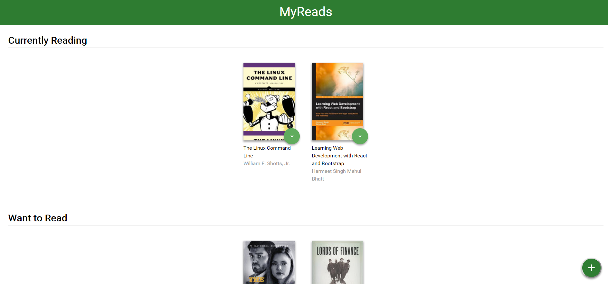
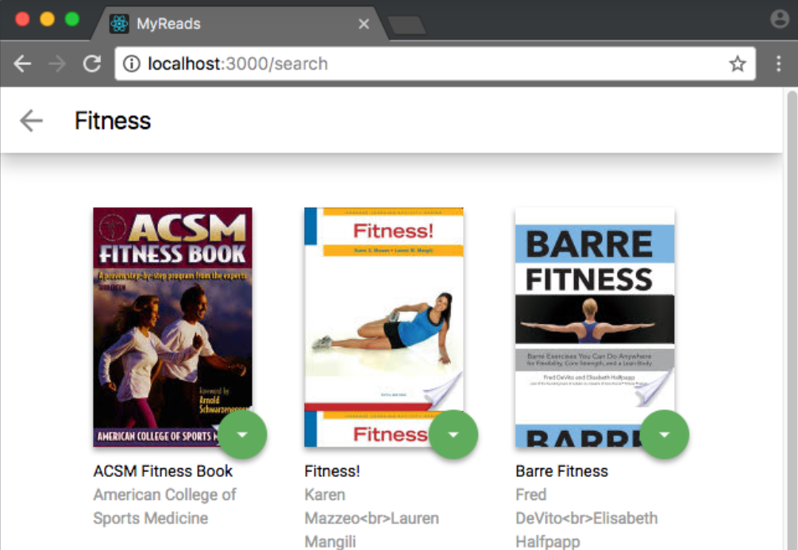
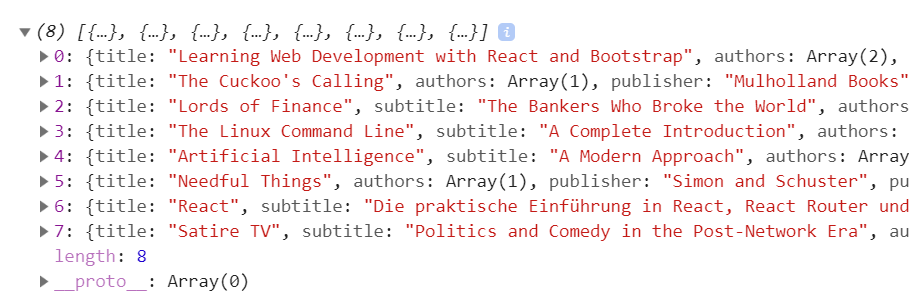
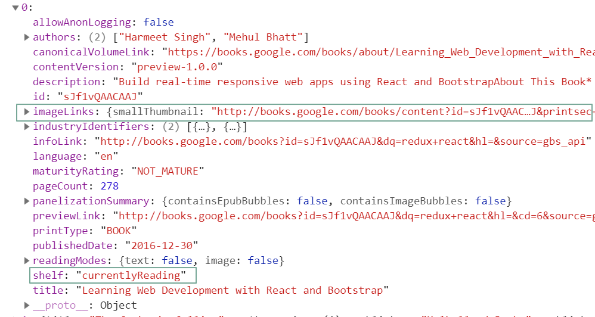
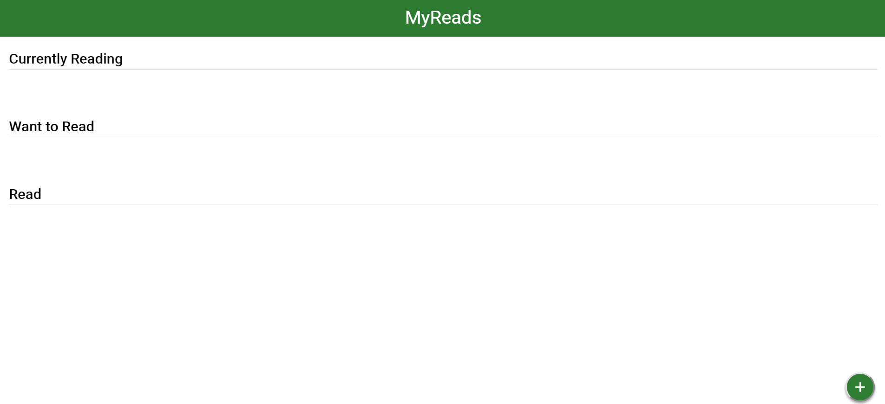
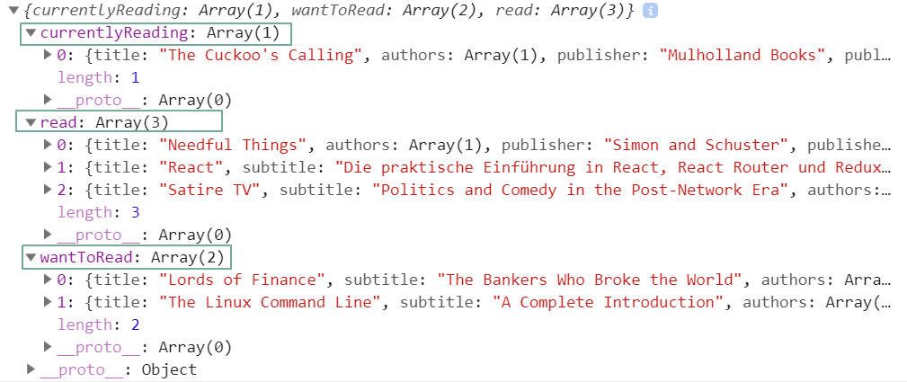
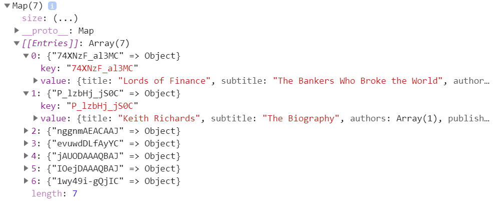

Project: 书架应用程序
本项目目标是创建一个书架应用程序，允许您选择和分类您已阅读，正在阅读或想要阅读的书籍。 该项目强调使用React构建应用程序，并提供API服务器和客户端库，用于在与应用程序交互时保留信息。
效果如下：
Homepage

SearchBooks

组件划分
React.js 中一切都是组件，用 React.js 构建的功能其实也就是由各种组件组合而成。所以拿到一个需求以后，我们要做的第一件事情就是理解需求、分析需求、划分这个需求由哪些组件构成。
对于上面这个阅读app，可以粗略地划分成以下几部分：
BooksApp：阅读app整体用一个叫 BooksApp 的组件包含起来。BooksApp 包含两个页面。
HomePage：第一个是主页展示用户的书架和搜索按钮。包括显示书架、显示书本和调整书本的书架位置功能，这一部分功能划分到单独的组件 BookShelf 和 Book 中。
SearchBooks：第二个是搜索页面，用一个叫 SearchBooks 的组件负责列表的展示。
BookShelf：负责书架的展示。
Book：每本书的列表项由独立的组件 Book 负责显示。并且可以调整书本的书架位置，这个组件被 Bookshelf 所使用。
所以这个阅读app分成五种组件，BooksApp、HomePage、BookShelf、Book、SearchBooks。
现在就可以尝试编写代码了。
组件实现
在写代码之前，我们先用 create-react-app 构建一个新的工程目录。所有的功能在这个工程内完成：
create-react-app myreads
然后在工程目录下的 src/ 目录下新建1个 BookApp.js 文件和 1个component 文件夹，在component下新建上述其它四个组件。
src/
BookApp.js
src/component/
HomePage.js
BookShelf.js
Book.js
SearchBooks.js
这里遵循一个原则：如果一个文件导出的是一个类，那么这个文件名就用大写开头。
BookApp组建
主要任务是建立主页面和搜索页面的路由。
安装 React router
npm install --save react-router-dom
BrowserRouter
在index.js文件中，BrowserRouter 创建一个history对象，用于监听url的变动
import React from 'react'
import ReactDOM from 'react-dom'
import { BrowserRouter } from 'react-router-dom'
import BooksApp from './BooksApp'
import './index.css'
ReactDOM.render(
<BrowserRouter>
<BooksApp />
</BrowserRouter>, document.getElementById('root'))
Route
Route 组建会根据url渲染页面
import {Switch, Route} from 'react-router'
class BooksApp extends React.Component {
render() {
return (
<div className='app'>
<Switch>
<Route
exact
path='/'
component={HomePage}
/>
<Route exact
path='/search'
component={SearchBooks}
/>
</Switch>
</div>
)
}
}
HomePage 组建
结构：书架和搜索按钮
要做的事1：获取用户的图书数据
要做的事2：准备书架内容数据
要做的事3：准备归类好的书籍
我们先铺垫一些基础代码，让组件之间的关系清晰起来。先写一个空的书架组建和搜索按钮。浏览器上显示标题 MyReads。
class HomePage extends React.Component {
render=()=>{
return(
<div className="list-books">
<div className="list-books-title">
<h1>MyReads</h1>
</div>
<BookShelf />
<div className="open-search">
<button onClick={() => { this.props.history.push('/search') }}>Add a book</button>
</div>
</div>
)
}
}
export default HomePage
要做的事1：获取用户的图书数据存放到state
使用getAll API获取用户的所有图书,先打印图书看下
用户的书架上一共有8本书，整体是数组，其中每一本书是一个对象。

第一本书的详情：

将获取到的图书通过 setState 更新到 state 中
class HomePage extends React.Component {
state = {
books: []
}
componentDidMount = () => {
this.refreshBooks()
}
/*get all user's book,here books is an array */
refreshBooks = () => {
getAll().then(books => {
this.setState(() => {
return {books: books}
})
})}
render=()=>{
return(
<div className="list-books">
<div className="list-books-title">
<h1>MyReads</h1>
</div>
<BookShelf />
<div className="open-search">
<button onClick={() => { this.props.history.push('/search') }}>Add a book</button>
</div>
</div>
)
}
}
export default HomePage
要做的事2：准备书架内容数据
<div>
{
Object.entries(shelves).map(([key, title])=>(
<BookShelf
key={key}
title={title}
/>
))
}
</div>
将书架的内容传递到书架组建
class BookShelf extends React.Component {
render = () => {
return (
<div className="bookshelf">
<h2 className="bookshelf-title">{this.props.title}</h2>
</div>
)
}
}
export default BookShelf
现在可以把这个简单的结构渲染到页面上看看什么效果

要做的事3：准备归类好的书籍
将books数组按书架分类变成一个对象

class HomePage extends React.Component {
state={
books:[]
}
componentDidMount = () => {
this.refreshBooks()
}
## 使用getAll API获取用户的所有图书
refreshBooks = () => {
getAll().then(books => {
this.setState(() => {
return {books: books}
})
})}
onShelfChange = () => {
this.refreshBooks()
}
render=()=>{
## 将state中的书籍按书架归类
const books=this.state.books.reduce((books,book)=>{
if(book.shelf){
books[book.shelf]= (books[book.shelf]||[]).contact([book])
}
return books
}, {})
return(
<div className="list-books">
<div className="list-books-title">
<h1>MyReads</h1>
</div>
## 准备好的书架内容和书籍会往下一层一层传递下去。先传给 BookShelf 组建渲染书架的内容
（正在读，已读和未读），再往下传到 Book 组建开始渲染每本书的封面和作者名字
<div>
{
Object.entries(shelves).map(([key, title])=>(
<BookShelf
key={key}
title={title}
books={books[key]}
onShelfChange={onShelfChange}
/>
))
}
</div>
<div className="open-search">
<button onClick={() => { this.props.history.push('/search') }}>Add a book</button>
</div>
</div>
)
}
}
export default HomePage
BookShelf 组建
class BookShelf extends React.Component {
render = () => {
const { title, books } = this.props
return (
<div className="bookshelf">
<h2 className="bookshelf-title">{title}</h2>
<div className="bookshelf-books">
<ol className="books-grid">
{books.map((book, index) => (
<li key={index}>
<Book
book={book}
onShelfChange={this.props.onShelfChange}
/>
</li>
))}
</ol>
</div>
</div>
)
}
}
export default BookShelf
Book 组建
负责显示每本书的列表项
调整书本的书架位置
用户一改书架位置就会通过API方法 update 更新 udacity 服务器上的书架数据,然后再重新 getAll 获取全部书籍到最外层的 state 里的books，再按书架整理进行渲染
class Book extends React.Component {
handleShelfChange = event => {
const toShelf = event.target.value
update(this.props.book, toShelf).then(() => {
if (this.props.onShelfChange) {
this.props.onShelfChange()
}
})
}
render(){
return(
<div className="book">
<div className="book-top">
<div
className="book-cover"
style={{
width: 128,
height: 193,
backgroundImage:`url( ${book.imageLinks? book.imageLinks.thumbnail : '' })`
}}
></div>
<div className="book-shelf-changer">
<select
defaultValue={book.shelf || 'none'}
onChange={this.handleShelfChange}
>
<option value="move" disabled>Move to...</option>
{Object.entries(shelves).map(([key, title]) => (
<option
key={key}
value={key}
>{title}</option>
))}
<option value="none">None</option>
</select>
</div>
</div>
<div className="book-title">{book.title}</div>
{book.authors &&
<div className="book-authors">{book.authors ? book.authors.join(', ') : 'None'}</div>
}
</div>
)
}
}
SearchBooks 组建
SearchBook-query
input是受控组建，它的值由state里的query控制，query开始设置为空字符，然后通过监控输入框，一旦输入框有变化就调用函数handleQueryChange将query的值通过setState更新后，再传给输入框显示出来
state={
query: '',
books: [],
myBooks: {}
}
handleQueryChange= event =>{
const query = event.target.value
this.setState(()=>{
return{query:query}
})
if (query.length > 0) {
search(query).then(books => {
this.setState(() => {
return{
books: books.length ? books : []
}})
})
}
if (query.length === 0) {
this.setState({
books: [],
})
}
}
<input
type="text"
placeholder="Search by title or author"
onChange={this.handleQueryChange}
value={query}
/>
SearchBook-searchResult
books：由搜索到的书构成的数组，里面的每一本书都是一个对象。书里面没有shelf属性
myBooks:通过 getAll API 获取服务器上用户自己的书架数据，将其转化成一个以书的 id 为 key，书的信息为 value 的 Map。书里面有shelf属性。
componentDidMount() {
getAll().then(books => {
const myBooks = new Map(
books.length
? books.map(book => [book.id, book])
: []
)
this.setState({
myBooks:myBooks
})
})
}

根据query的值去远程数据库搜索返回的书籍以数组的形式存放在state中的books里
搜索的关键字里可能有些书已经存在与用户自己的远程书架上了，可以通过id在myBooks查找，是用户的书则放到myBook里
然后将每一本books里的书传给Book组建，每本书都填上shelf属性
<ol className="books-grid">
{books.map((book, index) => {
const myBook = myBooks.get(book.id) || {}
return (
<Book
key={index}
book={{
...book,
shelf: myBook.shelf || 'none',
}}
/>
)
})}
</ol>